The gui package provides an object-oriented library of user interface components, which make use of the underlying graphics facilities.
Ivib is a program which lets the user design a gui interface, allowing the user to interactively place and configure components in a window area.
To create a dialog window using Ivib, start the program with the name of a new source file. For example:
ivib myprog.icnThe Ivib window will appear with a blank “canvas” area, which represents the dialog window to be created.
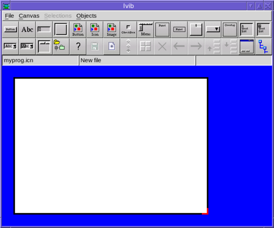
Most of the toolbar buttons create components to add to the dialog under construction. This doesn’t represent the full set of available components; the full list can be found under the “Objects” menu.
Once a component is added to the canvas, it can be dragged into position and resized (by dragging its corners). Right-clicking brings up a context menu for the component. For example, here is the view after a button has been added, and its context menu shown :-
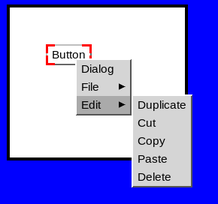
Selecting “Dialog” opens up the component’s configuration dialog; this can also be done by simply pressing the return key.
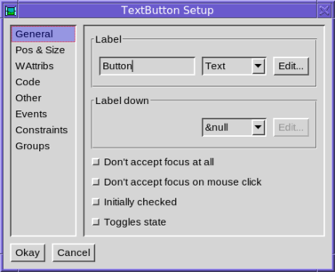
The name of the component (ie its variable name in the generated code) can be altered in the code tab :-
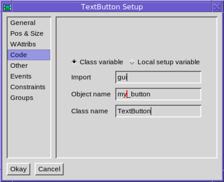
As well as adding components, the toolbar contains buttons for other useful operations. There is a save button, undo and redo buttons, a preview button which lets the user interact with the dialog under design, and a button which shows the tree structure of the components in the canvas.
Ivib’s saved files are program source code that implement the interface. A subclass of the Dialog class is written (the actual super-class is in fact configurable), and this includes a method called setup(), which configures all the components of the interface. Do not edit this method, since it will be re-written next time the dialog is saved.
Ivib normally saves its layout data along with the icon source file, as a lengthy comment. This can be rather overbearing, and so it is possible to save this data in a separate file. To do this select the “Code” tab of the dialog preferences (menu item “Canvas/Dialog prefs”). Then edit “Save layout in” field. In the entered value “$” represents the name of the icon source file (without its extension).
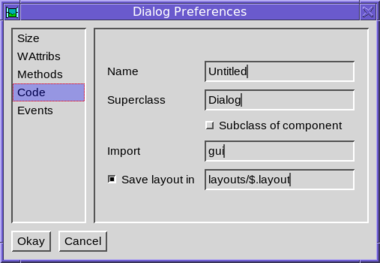
So in this case, if the icon file were mydialog.icn we would save the layout data in layouts/mydialog.layout. Obviously the layouts directory would have to exist.
gui.Component is the base class for all the components in the gui library, such as buttons, text fields, tables and so on.
Each Component is initialized before its enclosing dialog is shown, and “finalized” just before the dialog is disposed. This is done by the methods initially(), and finally(), respectively. These methods may be overridden to include custom initialization and cleanup code, but when doing so it is important to remember to call the superclass’s overridden method; for example :-
class MyComponent(Component)
...
public override initially()
Component.initially()
# custom initialization code goes here
end
public override finally()
Component.finally()
# custom cleanup code goes here
end
...
endEach component has its own set of window attributes, and its own cloned window to draw into. There are methods to set attributes which correspond to the methods in the Window class. For example :-
b := TextButton().
set_fg("green").
set_font("serif")To set attributes in ivib, use the WAttribs tab of the component’s dialog, and add the constraints, as follows :-
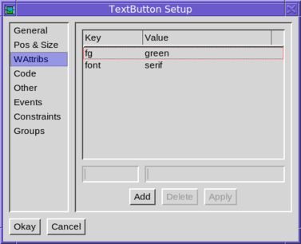
The cloned window is held in the member variable cbwin. It is created in the initially() method. Thereafter, it can be used to calculate text dimensions, such as font heights and text widths.
The display() method is used by the component to render itself. It draws into the cloned window, cbwin. Before calling display(), cbwin is clipped and erased to the rectangle which the system desires to be redrawn. This rectangle can be obtained via the get_cbwin_clip(), which returns a Rect instance, and this can be used to avoid drawing outside the clipped rectangle unnecessarily.
The display_children() method can be called from within display() to draw the component’s children.
When a component (or part of it) must be redrawn, it is “invalidated”. This is done by invoking the component’s invalidate() method, with an optional Rect argument indicating the part of the component which must be redrawn. The system then, at a later point, schedules a call to display() to redraw the component. Calling invalidate() is quite cheap.
A component can contain child components. Some components have children built-in, for example a scrollbar has up and down buttons which are both child components. But child components can be added arbitrarily too. In ivib, child components can be added to a Panel component by dragging them inside the Panel. They then act as a unit, and can be moved together.
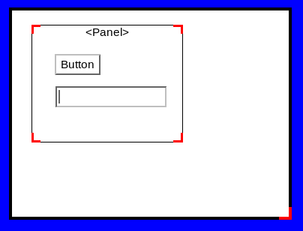
In ivib, the full tree of components may be viewed using the tree view window, which is opened via the toolbar button at the right with the tree icon.
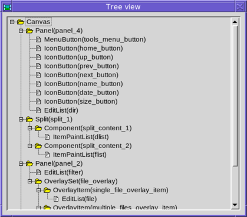
A child component inherits the window attributes from its parent. Thus setting the above Panel’s foreground to green would give both the child components a green foreground too.
The children of a component have a particular Z order, which determines which child component lies on top of another, when they overlap. Most of the time, children don’t overlap each other, so this doesn’t matter.
To change the Z order in ivib, click on the components in the desired order, whilst holding down the control key. The selections should then be numbered, as shown in the following example :-
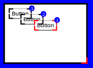
Now select the menu item Selections/Order/Set Z order. The z order is changed to the selected order, resulting in the following :-
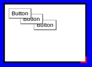
The children also have a particular tab focus order, which determines how the focus changes when the tab (and cursor) keys are pressed. This can easily be changed in ivib by selecting as described for Z ordering, and using the menu option Selections/Order/Set tab order.
Child components are clipped to their parent’s rectangle. So for example, in the following the button is clipped by its parent panel, and is only partly visible.
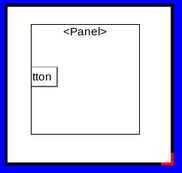
gui.Paint is an abstraction for drawing. A Paint instance has a size, and can draw itself at an arbitrary location. The idea is that a Paint is used where one would intuitively use a string - for example in a button label, or a menu item, or a tab heading. But a Paint is abstract, so an implementation can draw anything, not just text.
The following sections describe some of the common Paint implementations. Of course, you can also define your own.
gui.TextPaint is the most basic Paint instance; it just paints a simple string.
b := TextButton().
set_paint(TextPaint("Hello"))gui.ImagePaint paints an arbitrary image. It has options for choosing the source of the image, and for scaling it to a particular size. For example, to simply display an image from the cache :-
b := TextButton().
set_paint(ImagePaint().set_cache("cache-key"))In ivib, an ImagePaint may be configured by first selecting “Image” from the relevant drop-down list (for example in a button’s configuration dialog). Then click the “Edit” button. The following dialog is shown.
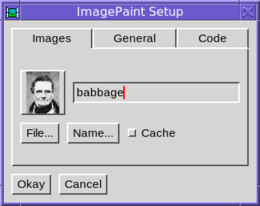
The text field can contain either a file name, or a key into the image cache’s table of named image data. The two buttons let you browse for these values if you wish to. The box to the left gives a preview of the image. The cache checkbox indicates whether the image, when loaded, should be retained by the ImageCache. This will make future references to the same image faster, but will take up memory.
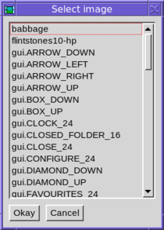
gui.GridPaint allows text and images to be combined using the same layout system used by gui.GridLayout (see also Grid Layouts below). Text attributes can be set to give different fonts and colours. A single string is used to specify everything. Ivib contains an interactive editor so that you can see the results as you make edits to the string.
To access the editor, first select “Grid” from the dropdown list associated with the relevant Paint. It will normally be set to “Text”. Then press the “Edit” button.
The grid string consists of text interspersed with commands, which begin on a newline with a “.”. These commands control the grid and its contents. The grid string should begin with a cell command.
The content of each cell in the grid is split into lines. Each line is “output” to the window with a break command, .br. Here is a very simple grid string :-
.cell
Hello
.br
World
.brThe following screenshot shows this string being edited in the Ivib GridPaint editor.
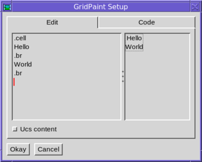
The following is a complete list of grid string commands. Note that if an argument contains spaces, it should be surrounded in single quotes.
.cell <constraint> ... Create a new cell. The grid constraints are given after the .cell command; for example :-
.cell l_inset=5 eol.br Finish the present line within the cell, and output it, and begin a new line.
.img <key> Insert an image from the image cache. The argument gives the key. Typically one would include an image with the $load preprocessor command, then put the image into the image cache (usually in the main procedure), and then use the key. See ImageCache below.
.imgl <name> Load an image using ImageCache.load. The argument gives the ImageCache name key or file name.
.x_spc <spc> Insert the given space, in pixels, into the current line.
.y_spc <spc> Specify that the current line in the cell is at least the given height, in pixels.
.fg <colour> Set the foreground colour. If colour is omitted, the colour is reset to the parent component’s foreground.
.bg <colour> Set the background colour. If colour is omitted, the colour is reset to the parent component’s background.
.font <font> Set the font. If font is omitted, the font is reset to the parent component’s font.
.leading <leading> Set the leading. If leading is omitted, the leading is reset to the parent component’s leading.
.x_ialign <alignment> Set the internal X alignment, ie how a line in a cell will align with the other lines in the cell. This only has an effect at the beginning of a line, before any output. The initial value of this setting is c, ie centre alignment. For example :-
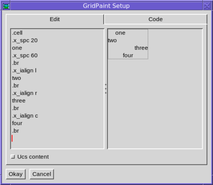
.y_ialign <alignment> Set the internal Y alignment, ie how following output in a line will align vertically within the line as a whole. The initial value of this setting is c. For example :-
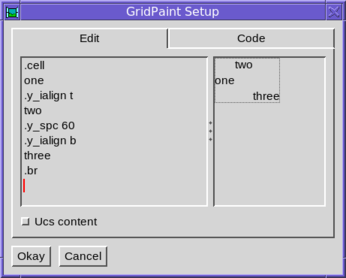
Instances of the gui.ABorder class are used to draw borders around things. The odd name is to avoid a name-clash with a component, gui.Border. Unlike Paint, a border doesn’t have a size; rather it has four inset values, giving the width of each of its four borders. A border also has two alignment values, used to specify the alignment of the thing being drawn inside the border. For example :-
TextButton().
set_size(110, 80).
set_paint(TextPaint("Button")).
set_border(RaisedBorder().set_align(Align.R, Align.B))results in
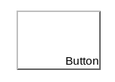
Note how the button has been given a size greater than its natural preferred size based on the label. So the alignment of the border causes the label to gravitate towards the bottom right corner within the additional space.
Normally of course a button will be sized to its preferred size, so there will be no extra space; and if there were the default alignment of a border is to centre the label.
The following image shows some of the available border classes drawing a Button’s border. gui.NullBorder is a zero size border, whilst gui.EmptyBorder provides space, but nothing visible. The default space is the constant Gui.X_INSET horizontally and Gui.Y_INSET vertically.
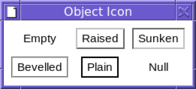
The border of a component can be changed in ivib by choosing the “Other” tab in the component’s configuration dialog, then choosing the border style from the drop-down list. Pressing the “Edit…” button allows the chosen border to be configured.
gui.CompoundBorder is useful to combine two borders, one within another, usually to provide some space padding, by making one of the borders an EmptyBorder.
The Paint classes operate on single items of data; for example a TextPaint instance draws a particular string, and only that string. The gui.ItemPaint classes on the other hand are designed so that a single instance can operate on multiple data items. They can thus be used to provide a flexible way of rendering data in components which draw many items of data, such as lists, trees and tables. The several data items are passed to the methods of the single ItemPaint instance to give sizing information and to draw the data.
An ItemPaint is generally used by a component together with a border in order to provide a border around each item.
Some useful subclasses of ItemPaint include gui.TextItemPaint for painting text data, and gui.PixelsItemPaint for painting graphics.Pixels data, and gui.ImageCacheItemPaint for painting cached images (the data in this case being the keys into the cache). A particularly useful Component is LIBREF(gui.ItemPaintList), which provides a scrollable list, rendering each item using a single ItemPaint.
gui.MapItemPaint is an adapter class which allows another ItemPaint to be easily used with a list of data items of arbitrary type. For example, suppose we had a list of records of employees, with each record including a “name” field, and wished to display the names in a list. A TextItemPaint couldn’t be used directly with the list, since that expects string data (rather than records), but a MapItemPaint can adapt the list as follows :-
procedure convert(x)
return x.name
end
...
l := ItemPaintList().
set_item_paint(MapItemPaint(TextItemPaint(), convert)).
set_contents(employee_list)The convert procedure is used to “map” the records in the list to the string data expected by the enclosed ItemPaint.
An example of a sophisticated ItemPaint, is that used in the file dialog to draw file names and icons :-
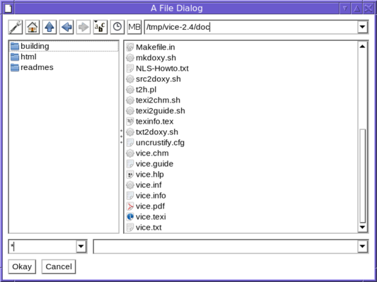
The input data elements to the ItemPaint are io.ListEntry items, each of which gives information about a single file, returned by the io.Files.list() method. The right-hand list of files is created as follows :-
flist := ItemPaintList().
set_draggable_cursor(&yes).
set_item_paint(AnnotatedIconFilesItemPaint()).
set_item_border(EmptyBorder().
set_insets(Gui.TEXT_INSET, Gui.TEXT_INSET, 0, 0).
set_x_align(Align.L))This particular ItemPaint is also used in the example programs flowterm, explorer and ttexplorer.
gui.Dispatcher is responsible for dispatching events and re-drawing requests to open dialogs. It also includes a scheduler that can be used to run background tasks. This is used quite widely in the gui library; for example to make the cursor in a text field go on and off. It is very easy to create a background task, as follows :-
t := Dispatcher.new_task{ ... }where the dots contain whatever code we want to run in the task. Typically this will be a procedure or method involving a loop, which does something, then sleeps for a while, and repeats. The returned value, t, is an instance of the class io.Task. The task can now be started with
t.start()and stopped again with
t.stop()The Task class has many other methods for controlling its behaviour, and can also be used to do background I/O - (see the documentation for the io.Task, io.TaskStream and io.Scheduler classes for more details).
The example program sieve contains a simple example of a task which calculates prime numbers. A more complex example is browser which is a simple web browser that does its background I/O using Tasks.
gui.ImageCache is used to store image data and rendered images in a convenient and efficient way. It consists of static methods, and maintains two tables. The first table maps string keys to image data. The image data is binary string image data, in any recognised image format. The second table maps string keys to Windows, each containing a single image. These can then be drawn into a dialog.
The data table is particularly useful for associating image data loaded with the $load preprocessor directive with a string key, which can then be referenced anywhere in a program. For example :-
$load MY_IMG_DATA "/home/rparlett/images/my_img.png"
...
procedure main()
...
ImageCache.name_image("my_img", MY_IMG_DATA)
...
end
...Now we can use the key “my_img” to refer to the png image data. However, this is only data, as opposed to an actual rendered image. These are contained in hidden Windows, one for each image, and are stored in the cache’s image table. To lookup a Window, use the ImageCache.get method, passing either a filename, or a key into the named image table. For example :-
i1 := ImageCache.get("/home/rparlett/images/my_img.png")
i2 := ImageCache.get("my_img")The first example loads the image in the named file into a Window, puts it into the image map, and returns it. The second example looks up the key “my_img” in the data map, and assuming we have placed such an entry in the data map, as in the previous example, creates a Window from that data, puts it into the image map, and returns it. In both cases, subsequent calls with the same filename or data key will immediately return the Window cached in the image map.
The most significant difference between the two examples is that the first requires the png file to be present at run-time; whilst the second will use the data stored in the data map with name_image(); that data will have come from the compile-time inclusion of the image data, so the png file needn’t be present at run-time.
If a data key and filename clash (in the above example, perhaps there may be a file named “my_img” in the current directory), then the data key has priority. In other words, only if the data key is absent is a file loaded. If the file is absent too (or the image data is invalid), then the get() method fails.
A Window returned by get() should never be closed by the caller, since it may be re-used later on.
ImageCache also has a load() method; this is like get(), but it doesn’t cache the image in the image table. So
i3 := ImageCache.load("my_img")will always create a new Window from the “my_img” data. Unlike a Window returned by get(), the caller must ensure that a Window returned by load() is closed; otherwise a memory leak will result.
In ivib, selecting cache keys presents a problem, because the cache data may be setup elsewhere in the program of which the dialog being designed will form a part; so ivib has no way of knowing what the image represented by a key may be. In order to give some flexibility, ivib allows the user to provide a list of directories containing images; these are scanned at startup and the image cache is populated with image data from any image files found. The list of directories can be set up in the dialog File/Preferences, and in the “Named image paths” tab :-
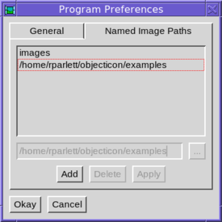
For instance, the examples directory, included in the above list, contains several png and gif files; for example rpp.FONT_24.gif. At startup, this file is loaded into the image cache names table, with the key rpp.FONT_24 (the extension is dropped). Then this image is available (along with several others) from the list shown when a cache key is requested :-
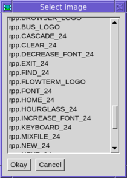
When the dialog is incorporated into the program, it is the programmer’s responsibility to set up the cache so that any keys used are available. So for example, if the rpp.FONT_24 key were used, then the file rpp.FONT_24.gif could be included with $load and the data named with name_image(), as described above. The image used in the dialog created with ivib would then render correctly.
In order to draw a component, the system needs to know its size and position on the screen. The Component class is a subclass of gui.Rect, which gives x, y, w and h fields to provide these values; however these values need somehow to be computed. There are several possibilities.
The component may be positioned by overriding its parent’s layout() method; for example a ScrollBar’s buttons are positioned and sized in ScrollBar’s layout() method, based on the ScrollBar’s own position and size (which are always known when layout is called).
The component may have its position and/or size set explicitly. set_pos(x, y) sets the x and y position of the component. Each coordinate can be either an absolute pixel position, or a percentage plus or minus an offset. For example :-
c.set_pos(50, 60)
c.set_pos(100, "25%")
c.set_pos("50%-20", "25%+100")Note that the position is relative to the parent component, and the percentages are the percentage of the width (or height) of the parent component. This is in contrast to the computed positions, which are relative to the containing window.
The positions may also be made relative to the left or right (in the x-direction) or the top or bottom (in the y-direction). For example :-
c.set_align(Align.C, Align.B)The default alignment is relative to the top-left of the parent.
The set_size(w, h) method sets the size of the component; parameters are as for set_pos() above.
In ivib, the “Pos & Size” tab permits the configuration of a component’s position and size, as well as its Z-order value. Alternatively, the component may be positioned and sized with the mouse, or the cursor keys. Shifted cursor keys adjust the size rather than the position.
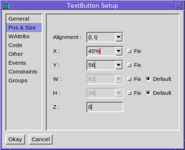
The component may provide a default size, if one isn’t set explicitly. For example, a button’s default size may be calculated from its border’s insets and its paint’s dimensions. A component provides default width and/or height by implementing the get_default_width() and get_default_height() methods.
A Layout may be set in the component’s parent. A Layout is responsible for sizing and positioning all of the children in a component, and can also calculate a preferred size for the component too. The gui library is designed so that multiple Layout implementations can be used, but in practice only one, GridLayout, is needed in practice. This is described in the next section.
As its name implies, a gui.GridLayout lays its child components out in a grid. Each component may take up several rows or columns in a grid, and may float within its grid cell(s), or be expanded to fill them entirely. A grid is configured by way of its components’ constraints, which comprise several configurable settings stored in each component.
Constraints are not actually specific to grid layouts, since they form part of a more general layout system. They are thus stored in a table, rather than as member fields of Component. To set a constraint, use :-
c.set_constraint(key, val)where key is a string and val is some arbitrary value which will be understood by the layout to be used.
The full list of constraints understood by GridLayout is as follows :-
x_tab, y_tab When this component is added, the given values are added to the cursor before its position is calculated.
eol Set y to the next row, and set the x position to 1.
x, y Specify the position explicitly. If not given, the position is calculated from the cursor position.
w, h Specify the size of the component in grid units. The default is one grid unit in both directions.
l_inset, r_inset, t_inset, b_inset Specify the insets around the outside of the cell. The default is the grid’s default outer inset, for edges at the edge of the grid, or the grid’s default inner inset for internal edges.
x_align, y_align The alignment of the component within the cell. Possible values for x_align are Align.L, Align.R or Align.C; for y_align they are Align.T, Align.B or Align.C. Note that alignments are calculated within the cell’s insets. So for example, to place a component at the absolute left edge of its cell, specify x_align as Align.L and l_inset as zero.
x_fill, y_fill Flag values; if set then the component expands to fill its cell.
x_weight, y_weight The weight is a numeric value which indicates how much of any free space should be allocated to this cell. The weights in a row or column are totalled and the extra space allocated in proportion to each cell’s weight. If all the weights in a row or column are zero, then any free space around the grid is not allocated to the cells. If the extra setting of the grid is not set to Grid.EXTRA_CELLS, then the weights are ignored.
Components are initialized with a set of suitable constraints. In ivib these can be edited either in the “Constraints” tab of the component’s configuration dialog :-
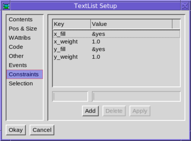
or via the right-click context sub-menu “Constraints”; for example :-
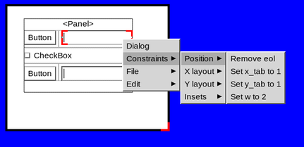
Ivib supports interactive design of a GridLayout. To get started, it is easiest to first layout the children by hand, but without worrying about being too precise. For example, here we have four components in a Panel :-
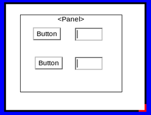
Now right-click on the Panel, and select the option “Gridify”. The layout is changed to a GridLayout, and now appears as follows :-
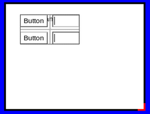
(If your grid appears with more columns, and blank gaps, then press “Undo” and try making your original hand drawn layout more precise).
Note how the Panel is much smaller. This is because its size is calculated by the GridLayout, giving it the most compact form (in the panel’s “Pos & Size” configuration tab, you will find that width and height are greyed out, and the “default” checkboxes ticked).
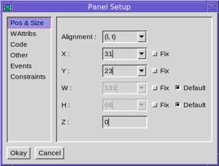
This is not obligatory however, and you can resize the panel to a larger size if you wish, simply by dragging on its corners. For example :-
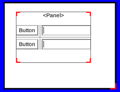
Note how the two text fields have taken up the additional horizontal space. This is because the default constraints of the text field indicate that it should expand horizontally.
To add a component to a grid, drag it into the containing component. It will be added to the end of the grid. For example, here we have added a checkbox.
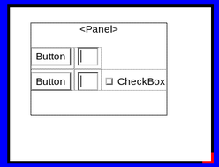
Now place it in the correct order position using the “Order Up” and “Order Down” toolbar buttons (third and fourth from the left on the second row). In the example, if we press “Up” twice, we will have.
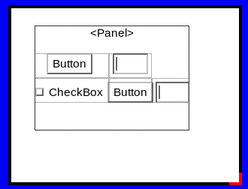
Finally, adjust the constraints of the component as desired. In this case, we set the new component’s “eol” constraint, and set its grid width to 2. Both of these can be set from the right-click sub-menu, “Constraints/Position”. The final result is then :-
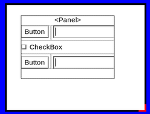
One common edit is to make a cell expand into available space. For example, we may wish the top-left button in our example expand vertically. This is done in two steps. Firstly, the cell is given a y_weight constraint of 1.0 (right-click menu option “Constraints/Y layout/Set y weight to 1.0”). This expands the cell (in fact the whole row) into the available empty space above :-
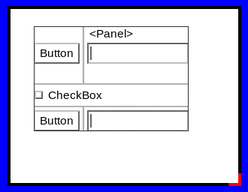
Now we wish to make the button fill its cell vertically, rather than float within its cell’s space. To do this we set the constraint y_fill to &yes (menu option “Constraints/Y layout/Set y fill to 1”).
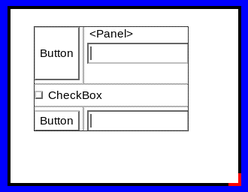
Having expanded the button in our example, we now see that the adjacent text field is floating vertically in the centre of its cell. We can change this so that it aligns with the top or bottom of its cell. For example, to align at the top we set constraint y_align to t (menu “Constraints/Y layout/Set y align to t”). The result is :-
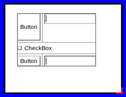
As another example, we may wish to edit the insets around a component. For example, we may wish the textfield to be flush against the left edge of its cell. To do this, we set the constraint l_inset to 0 (menu “Constraints/Insets/Set l_inset to 0”). The result is :-
Setting an inset to a particular value necessitates using the component’s configuration dialog and editing the value in the “Constraints” tab.
If we don’t specify insets on a component in a grid, then the default insets are applied, as described in the Constraints section above. These can be edited by selecting the “Other” tab of the containing component’s configuration dialog, then clicking “Edit…” next to “Layout”. The following dialog appears :-
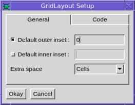
We can then alter the default inner and outer insets, or let the default values apply.
This dialog also allows configuration of the use of extra space. The default is to allocate to the grid’s cells, according to weight.
Having “gridified” a layout, you may at some point perhaps wish to return to the default layout, where components are positioned by hand. To do this, simply select the “Other” tab of the containing component’s configuration dialog :-
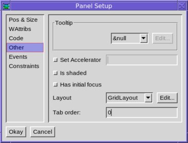
Then change the “Layout” setting to “&null”.
Components “fire” events when particular things happen, and these events can be “listened” to, so that action can be taken. Listeners are kept in a simple list, essentially of call-back procedures.
To add a listener, use the connect method, as follows :-
b := TextButton()
b.connect(callback, Event.ACTION)Here callback should be something that may be invoked; either a procedure or a method (static or instance). gui.Event.ACTION is the type of event to listen for. Components will fire several types of event, so this acts as a filter. If this parameter is omitted, then the listener is invoked for all events, regardless of the type.
The listener callback is invoked with three parameters, event, src and type. The first is a gui.WinEvent structure which encapsulates the underlying graphics system event. This parameter may be null if there is no underlying event. The second is the source component firing the event, and the third is the type of event. Most of the time we know these last two parameters anyway.
If we don’t care about any of the parameters, then we can use a co-expression as the callback; for example :-
b := TextButton()
b.connect(create write("pressed"), Event.ACTION)Now a refreshed copy of the given co-expression is invoked whenever the event is fired.
The event types fired by the gui library are found as constants in the gui.Event class. This section provides a brief summary of the various types of event and when they are fired.
The following event types are generated for all Components, based on mouse activity within it.
MOUSE_LEFT_PRESS
MOUSE_MIDDLE_PRESS
MOUSE_RIGHT_PRESS
MOUSE_LEFT_RELEASE
MOUSE_MIDDLE_RELEASE
MOUSE_RIGHT_RELEASE
MOUSE_LEFT_DRAG
MOUSE_MIDDLE_DRAG
MOUSE_RIGHT_DRAG
MOUSE_MOVEMENT
MOUSE_WHEEL_UP
MOUSE_WHEEL_DOWN
MOUSE_LEFT_DRAG_OVER
MOUSE_MIDDLE_DRAG_OVER
MOUSE_RIGHT_DRAG_OVER
MOUSE_LEFT_RELEASE_OVER
MOUSE_MIDDLE_RELEASE_OVER
MOUSE_RIGHT_RELEASE_OVERThe other event types are :-
MOUSE_ENTER, MOUSE_EXIT These two types indicated When the mouse enters or exits a component.
KEY_PRESS, KEY_RELEASE These two types are fired for the component with keyboard focus, on a key press/release. The actual key pressed can be determined from the code field of the event parameter.
WINDOW_RESIZE Fired by a Dialog when it is resized; the parameter is null.
WINDOW_CLOSE_BUTTON Fired by a Dialog when its close button is pressed; the parameter is null.
DIALOG_DISPOSED Fired by a Dialog when it is disposed; the parameter is null.
ICON Fired by a Dialog for all keyboard and mouse events received from the graphics system. This is useful, for example, to check for dialog-level control keys that should apply regardless of the keyboard focus.
BUTTON_RELEASE, BUTTON_PRESS Fired by a Button to indicate changes in the state of the button. Note that the ACTION type is usually the correct type to listen for; these are rather lower level event types.
BUTTON_HELD Fired repeatedly by a Button whilst it is held down, in the same way a key will repeat whilst held down.
SELECTION_CHANGED Text and list components notify that their selection has changed by firing this event type.
CONTENT_CHANGED Fired by text components when the user has edited the content.
CURSOR_MOVED Fired by text and list components when the cursor has moved.
VALUE_CHANGED Fired by scrollbars and sliders, and other components that represent a particular value, when that value is changed.
ACTION This event type is fired when a button is pressed (either with the mouse or via the keyboard), by text fields when the user presses return in the field, and by menu components when they are selected.
TREE_NODE_EXPANSION This type is fired by a tree when a node in the tree is expanded (or contracted).
SIZER_PRESS, SIZER_DRAG, SIZER_RELEASE These event types are fired by the Sizer component, which provides dynamic resizing of two components.
GOT_FOCUS, LOST_FOCUS These types are fired when a component gets, or loses, the keyboard focus.
IN_POINT_CHAIN This is fired before and after each mouse or keyboard event, for each component the mouse is over.
POPUP_CLOSED This type is fired by a PopupMenu when it is closed.
INTERRUPTED This type is fired when a Component is about to be shaded or become hidden, or the dialog is about to be blocked (usually by a modal dialog opening). It won’t receive subsequent events.
RESUMED This type is the counterpart of INTERRUPTED; and is fired when the Component is going to receive events again.
To add one or more listeners to a component in ivib, select the “Event” tab of the component’s configuration dialog.
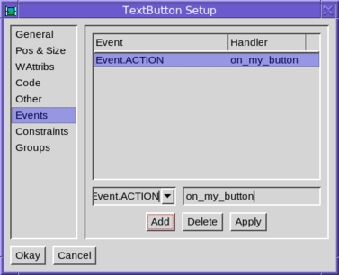
To add a listener, click “Add”. This will add a listener for the ACTION type. If this isn’t what you want, edit the details and click “Apply”. When the dialog is saved, a listener method is inserted. In the example shown above, the following code is generated :-
private on_my_button(ev)
endThis method can be filled in with whatever code is required. Note that the default name for the method is generated from the component’s name, so it is best to give the component a meaningful name (by editing it in the “Code” tab), before adding a listener; then the default method name will probably make sense.
Items in menu systems are rather like simplified Components, and in fact form an independent class hierarchy, based on gui.MenuComponent. The top-level containers of menu items are normal Components however. The familiar menu bar across the screen is gui.MenuBar (add one using the toolbar button labelled “Menu”, or via the “Objects” menu), and ivib has an editor for creating a tree of sub-menus and menu items within it. Here is a simple menu being edited :-
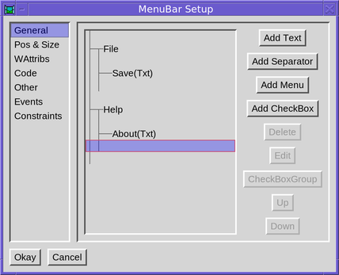
There are two top-level menu entries, each with one “text” item, which is just an ordinary terminal item. The cursor is positioned so that the next item will be added at the bottom of the “Help” menu.
The “Edit” button allows an entry to be edited, setting its name, icons and so on. To connect an event listener to an item, select the “Other” tab. For instance, to set a listener to call when the “Save” is chosen :-
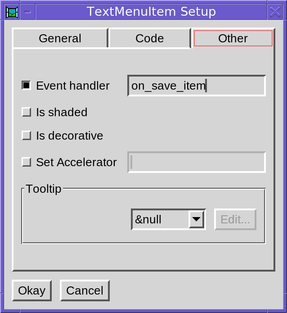
These are menus that appear on a right-click, or some such other event, rather than via a fixed top-level component. Unfortunately ivib isn’t much help here, and such menus have to be constructed manually, usually in an event handler. Some programs in the “examples/” directory might be of help; for example “dndtest” pops up menus on events in its list as follows :-
#
# A mouse press event on the list
#
public on_list_press(ev)
local m, mi, pm, t
m := Menu()
... Configure the menu; for instance :-
mi := TextMenuItem().set_label("Insert rows")
mi.connect(self.on_new_rows, Event.ACTION)
m.add(mi)
# Show the menu
pm := PopupMenu()
pm.popup(self, m, ev.x, ev.y)
endThe important class is gui.PopupMenu which actually undertakes the job of making the popup menu appear.
The gui.TabSet Component requires a bit of extra explanation. Like Panel, it is a container of other Components, but unlike Panel, it employs several containers, only one of which is visible at any particular time.
The edit dialog for a TabSet looks like this :-
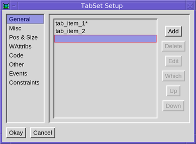
Here we have two “tabs”; more can be added via “Add”. The “*” indicates which one is visible, and this can be changed by using the “Which” button. The properties of a particular tab can be changed via “Edit”.
After changing the visible tab, Components can be dragged into it in the same way as a Panel.
The “Tree view” dialog (opened via the button at the right of the main toolbar) is especially useful with TabSets. It shows all of the constituent parts of the TabSet, regardless of which is the current tab. Right clicking on any of these Components allows them to be configured; they can also be dragged around to move them from one tab to another (or out of the TabSet entirely).
Here is what the tree view might look like for a TabSet :-
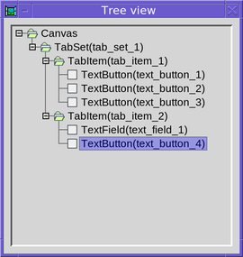
An gui.OverlaySet is quite like a TabSet, except that its visible “tab” is configured programatically, rather than by the user. But its configuration in ivib follows the pattern described above.
The gui.Dialog class is a Component, which represents the top of the container hierarchy of components in a dialog. It sets up and manages the underlying graphics Window instance.
In ivib, to access the dialog preferences, either right-click on a blank part of the canvas and select “Dialog”, or use the menu option “Canvas/Dialog prefs”.
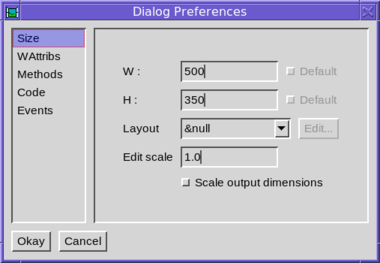
To display a dialog, invoke its show() method. This displays the dialog and returns immediately. The method show_modal() on the other hand, waits until the dialog has been closed before returning. Both these methods take a parameter, d, which specifies a parent dialog; the shown dialog then is “transient” for this dialog (ie it stays above it and is minimized and restored with it). Also, when the parent is closed, the child is also closed. A program in the examples directory, called multi, demonstrates these features.
To close a dialog, invoke its dispose() method.
Three useful empty methods may be overridden in a Dialog subclass. The first is component_setup(). This is called just before the dialog is displayed. It is a good place to tweak components set up by ivib. The second is init_dialog(). This is invoked just after the dialog is displayed. At this point everything has been initialized. It is a good place to start any background tasks. Finally, the converse of init_dialog() is end_dialog(). It is invoked just before the dialog is closed, and is a good place to free any resources or to stop any background tasks.
In order to make an interface look acceptable on monitors with varying pixel densities, a simple scaling facility is provided by the gui library. An environment variable, OI_GUI_SCALE can be set to indicate the amount of scaling to apply; the default value is calculated from the monitor resolution and size, with 96 dots per inch corresponding to a scale value of 1.0, meaning don’t scale at all. A value of 2.0 would produce an interface twice as large; for example :-
OI_GUI_SCALE=2.0 ivibIn order for an interface to support with scaling, it just needs to apply the gui.scale procedure to any constant which is measured in pixels. For example, a text field’s width should be set with something like :-
tf := TextField().
set_width(scale(160))ivib supports scaling. Simply select the checkbox “Scale output dimensions” in the “Size” tab of the dialog’s preferences dialog. Then all pixel dimensions will have the scale() procedure applied in the output file.